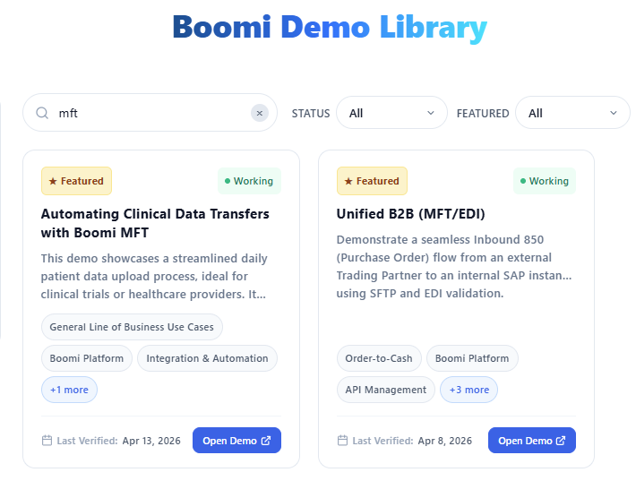
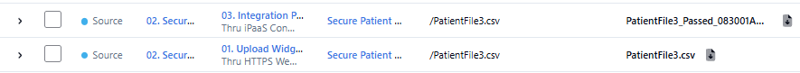

Automated Clinical Data Transfers
MFT + Boomi Integration round-trip — the file goes in raw and comes out renamed with a processing outcome.
What This Flow Demonstrates
A clinical data file is uploaded via an external Healthcare Upload Portal (a standalone, separately-provisioned web application). The file passes into MFT, which triggers a Boomi Integration process that processes the file and renames it with a pass or fail suffix based on outcome. The renamed file appears back in the Activity feed, closing the loop.
Key Features
- External upload portal feeding directly into Boomi MFT
- MFT triggers a Boomi Integration process automatically
- Outcome-based file renaming (
filename_pass.csvorfilename_fail.csv) - Full round-trip visible in the Activity feed
Architecture
Upload Portal (external healthcare portal) → Boomi MFT (receives file, tracks transfer) → Boomi Integration (processes file, renames with pass/fail) → MFT Activity (renamed file visible)
Find the Demo on Demo Central
Locate the full guided demo walkthrough on the Boomi Demo Central portal.
-
1
Go to demos.boomi.com
-
2
Navigate to Demo Central → All Demos.
-
3
Search for
mft. -
4
Open: "Automated Clinical Data Transfers with Boomi". This is the full guided demo script with screenshots, provisioning instructions, and step-by-step walkthrough.

Walk the Upload Portal Flow
Run the clinical data transfer and show the outcome in Activity.
-
1
From the Healthcare Upload Portal, upload a clinical data file.
The portal is connected to Boomi MFT — the upload registers as a new transfer immediately.
-
2
MFT receives the file and triggers the Boomi Integration process automatically — no manual trigger required.
-
3
Switch to the Activity feed in the MFT platform. Find the processed file — it should appear renamed with either a
_passor_failsuffix based on the Integration process outcome.

Next up